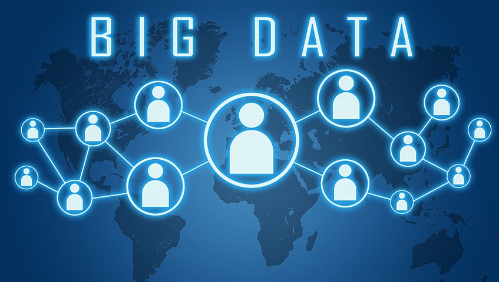

defination

The term has been in use since the 1990s, with some giving credit to John Mashey for popularizing the term. Big data usually includes data sets with sizes beyond the ability of commonly used software tools to capture, curate, manage, and process data within a tolerable elapsed time. Big data philosophy encompasses unstructured, semi-structured and structured data, however the main focus is on unstructured data. Big data "size" is a constantly moving target, as of 2012 ranging from a few dozen terabytes to many zettabytes of data. Big data requires a set of techniques and technologies with new forms of integration to reveal insights from data-sets that are diverse, complex, and of a massive scale.
"Variety", "veracity" and various other "Vs" are added by some organizations to describe it, a revision challenged by some industry authorities.
A 2018 definition states "Big data is where parallel computing tools are needed to handle data", and notes, "This represents a distinct and clearly defined change in the computer science used, via parallel programming theories, and losses of some of the guarantees and capabilities made by Codd's relational model.
The growing maturity of the concept more starkly delineates the difference between "big data" and "Business Intelligence"
Business Intelligence uses applied mathematics tools and descriptive statistics with data with high information density to measure things, detect trends, etc.
Big data uses mathematical analysis, optimization, inductive statistics and concepts from nonlinear system identification to infer laws (regressions, nonlinear relationships, and causal effects) from large sets of data with low information density to reveal relationships and dependencies, or to perform predictions of outcomes and behaviors